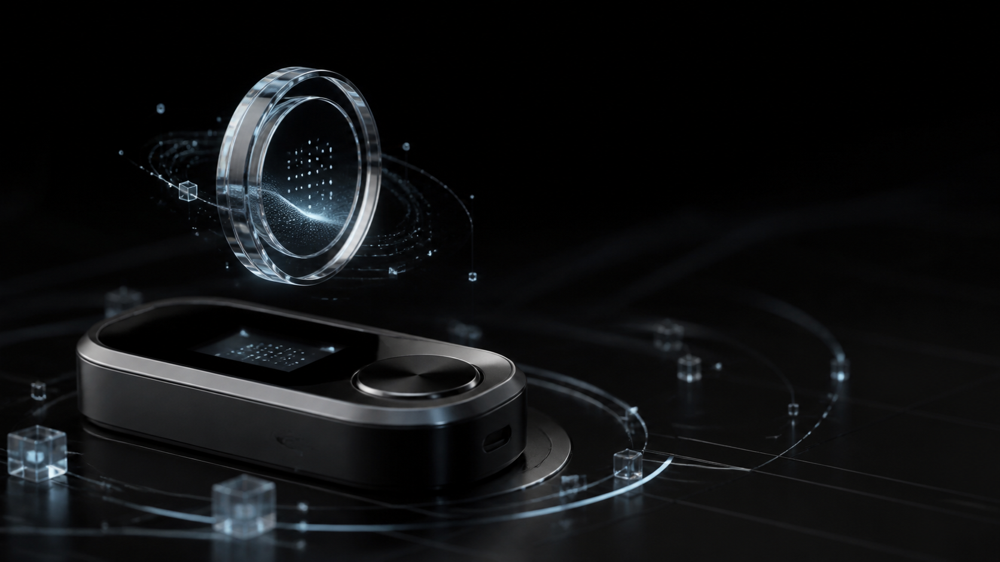

Market intelligence
Intelligence for quieter decisions
Research, venue context, and treasury signals for teams that move capital with precision.
Research layer
Built for calm decisions
Aurix compresses macro pressure, exchange flow, funding, and wallet behavior into one readable operating view.
Flow intelligence
Track where capital enters, pauses, and exits.
Venue quality
Spot liquidity, spreads, and operational drift early.
Treasury briefings
Short, structured reads for portfolio committees.
